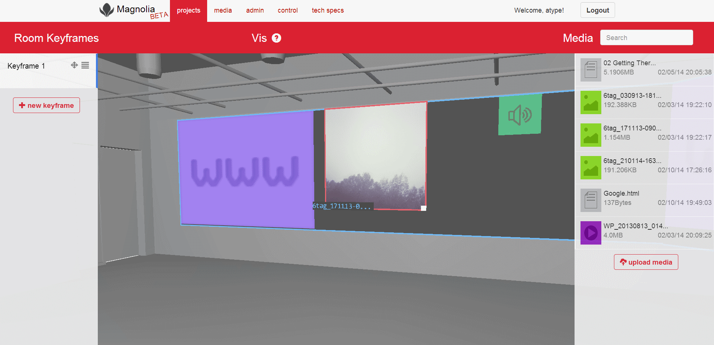
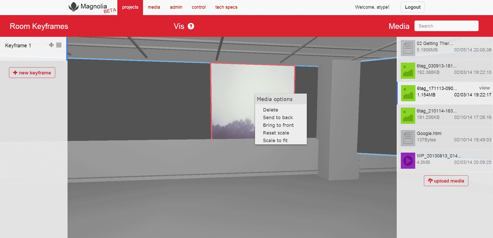
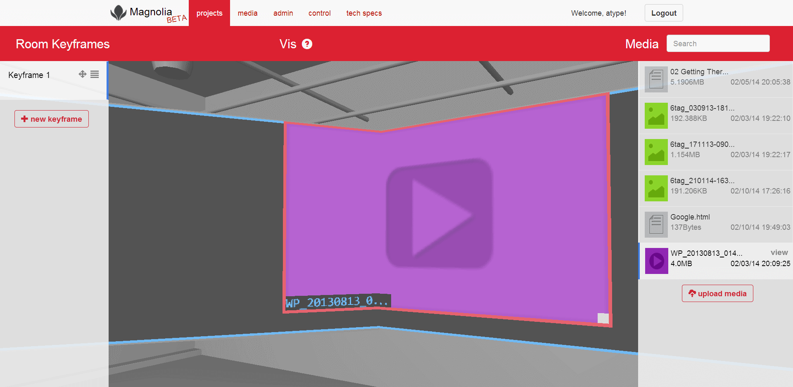
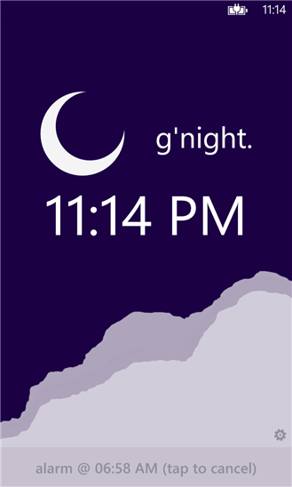
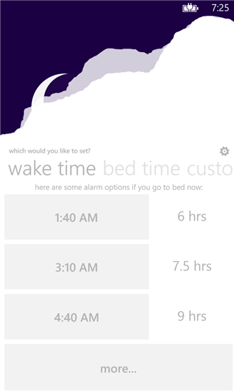
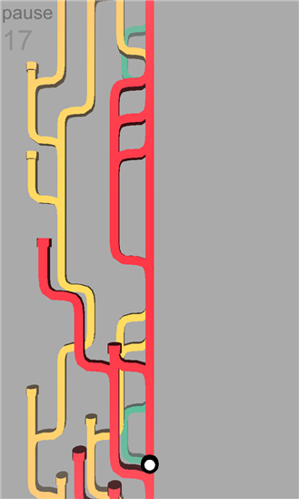
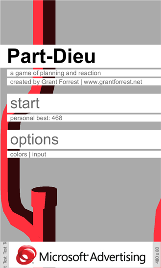
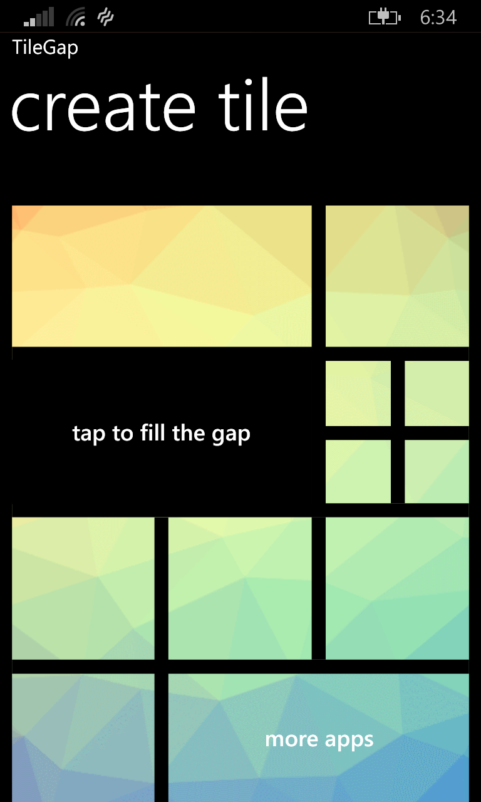
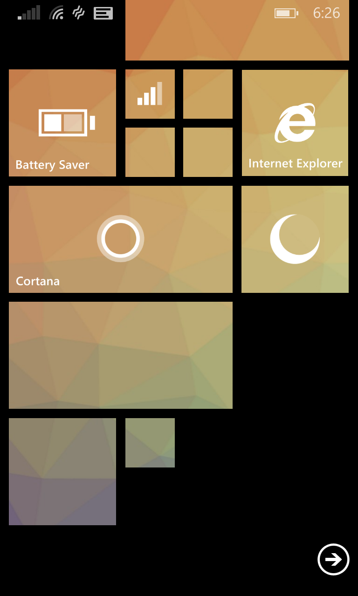
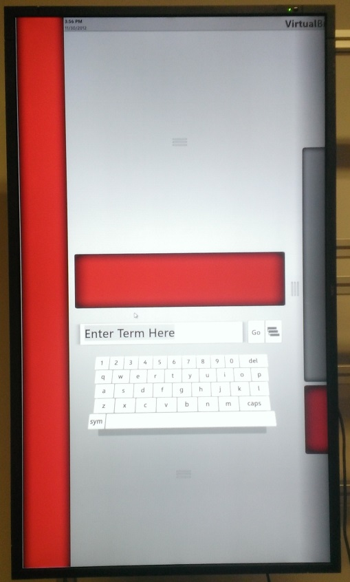

Who I am
Contact me
Magnolia
Browser-based 3D presentation creation and simulation
Summary


My role
What it does

The cool stuff
Sleepy
Sleep cycles in style
Sleepy



Part-Dieu
Metro-inspired runner game


Part-Dieu
TileGap
Fill the gaps on your Windows Phone start screen


TileGap
VirtualBrowse
A touch-centric catalog browsing kiosk in WPF
Overview
My role
